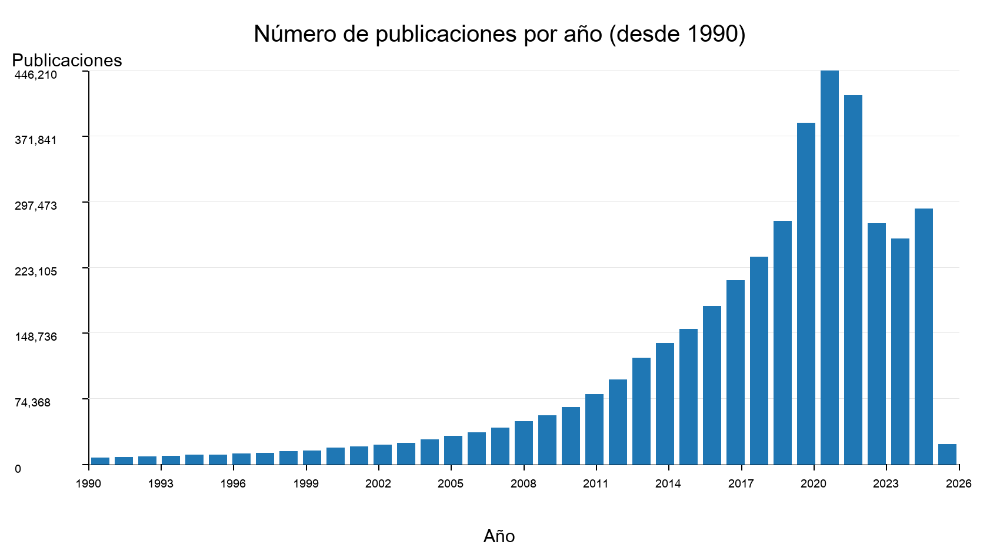
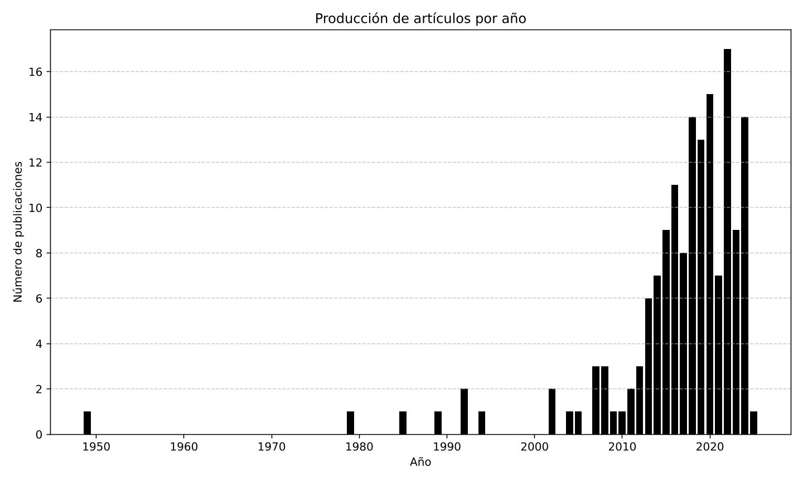
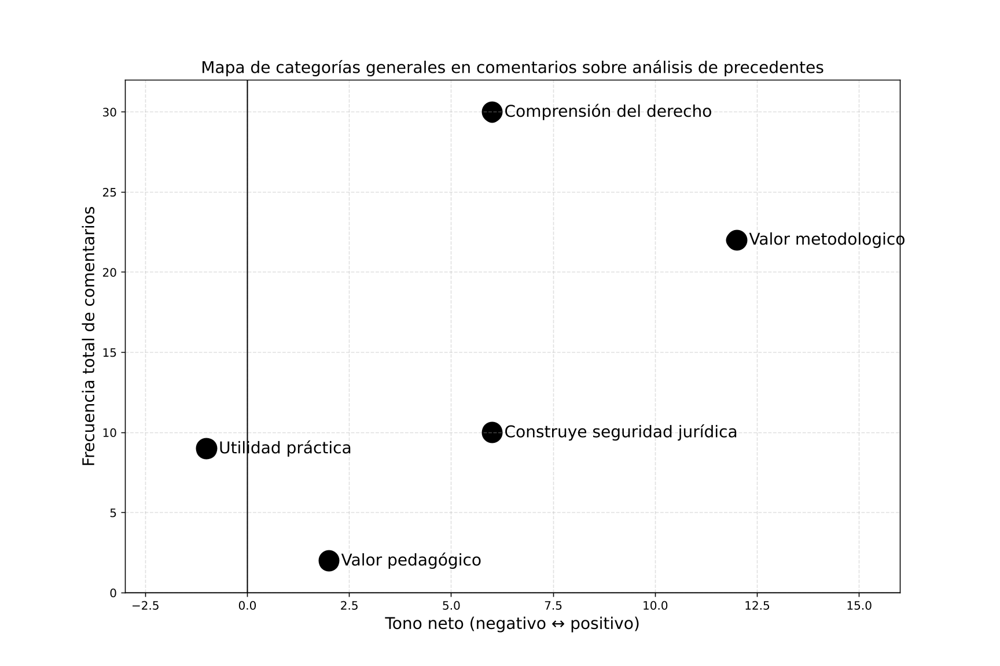
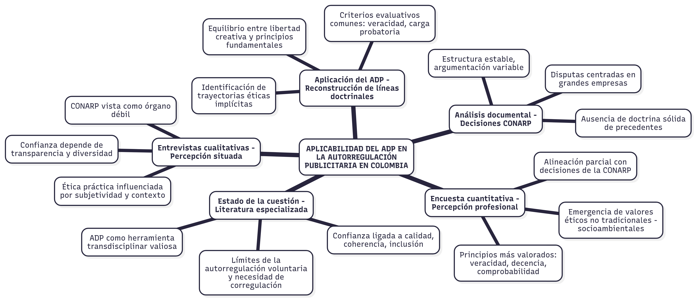
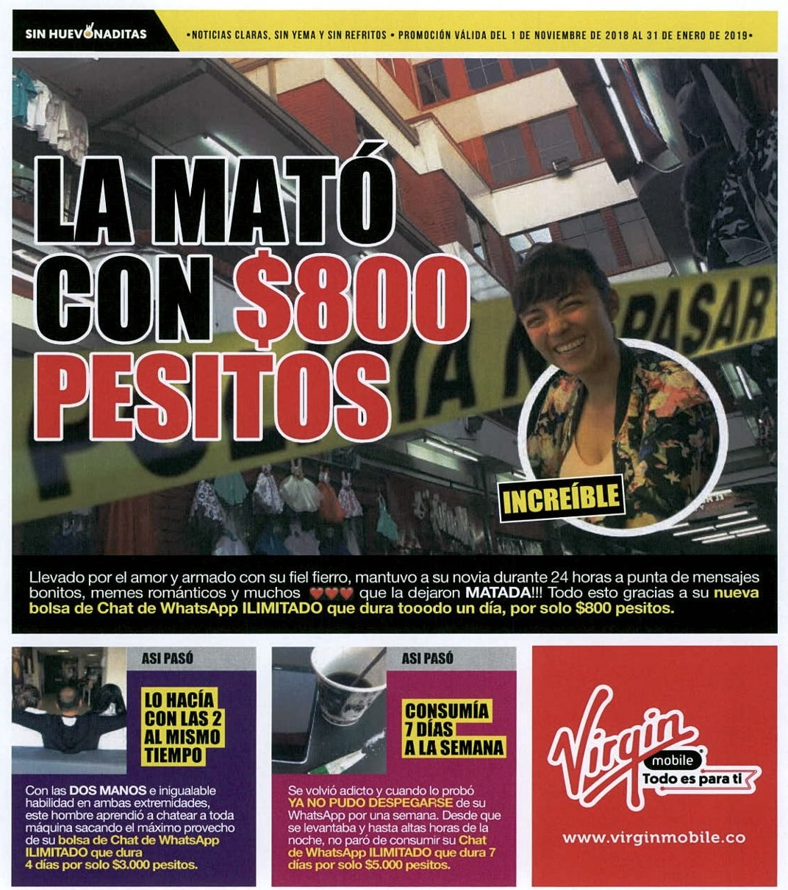
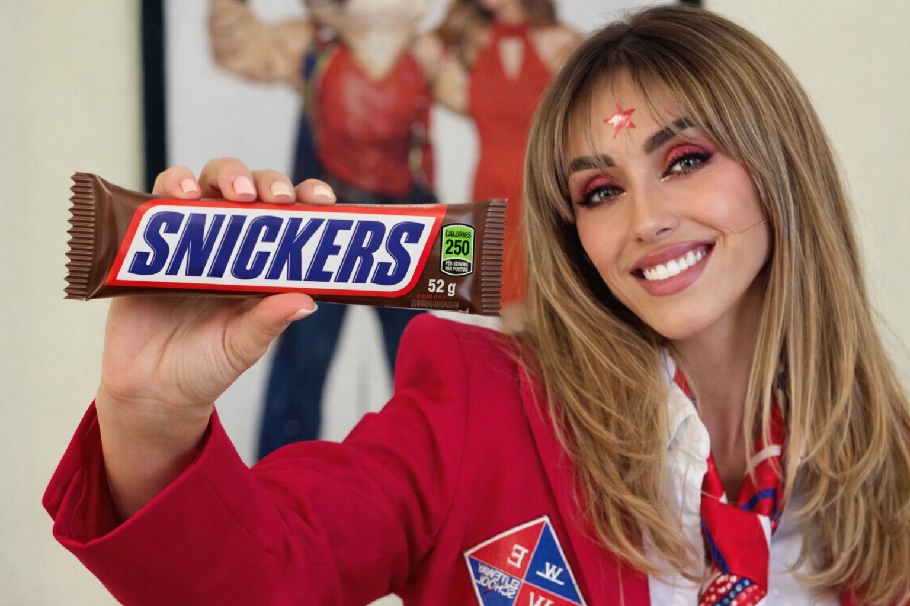
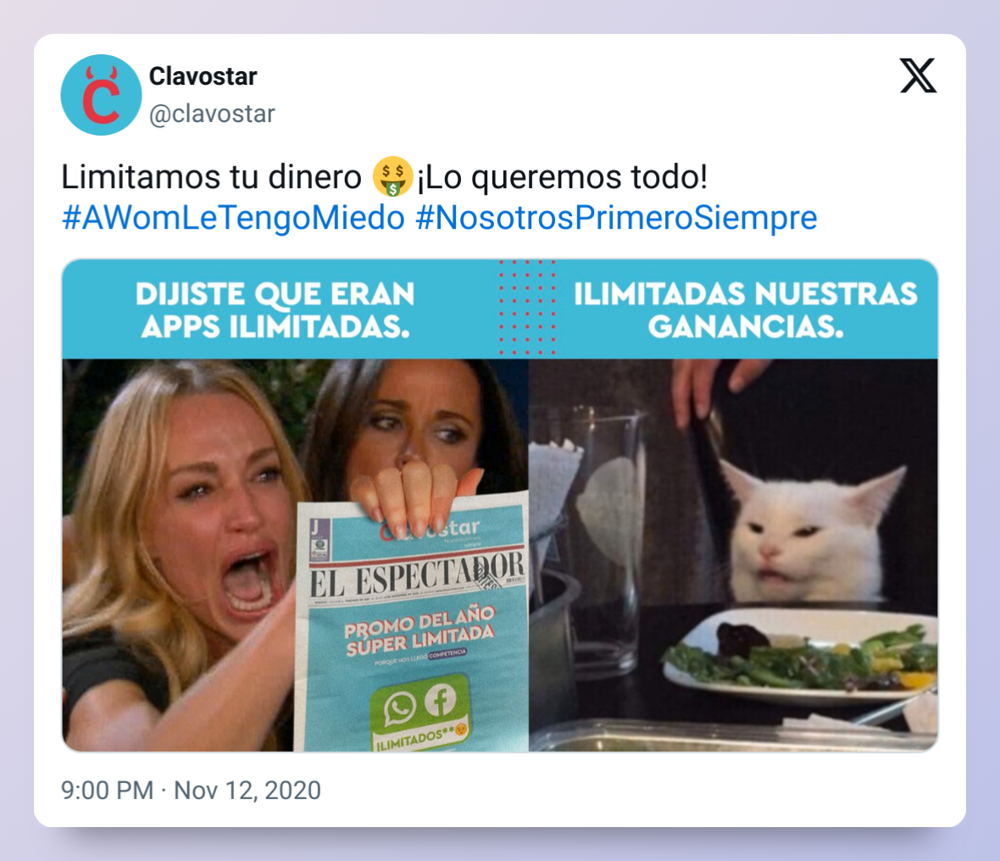

Triangulación de métodos
- • Encuesta estructurada a profesionales del sector
- • Entrevistas semiestructuradas a expertos
- • Análisis documental (de contenidos) de decisiones institucionales
- • Aplicación del Análisis Dinámico de Precedentes
Aviso de visualización
Usa un PC o una pantalla de escritorio para disfrutar correctamente la experiencia de navegación de esta presentación.
Tesis doctoral
Análisis de los dictámenes de CONARP en Colombia (1980-2018)
Programa: Doctorado en Comunicación Audiovisual, Publicidad y Relaciones Públicas.
Línea temática: Gestión económica y social de la comunicación y de las industrias culturales.
Subtema: aspectos jurídicos y éticos de la comunicación audiovisual y las organizaciones.
La investigación se sitúa en un momento de transición en la autorregulación publicitaria colombiana tras la disolución de CONARP en 2018 y la creación de AUTOCONTROL Colombia en 2019.
Relevo institucional
CONARP (1980–2018) → AUTOCONTROL Colombia (2019).
Causa del cambio
Pérdida de confianza y cuestionamientos sobre la representatividad del sistema anterior.
Riesgo institucional
Posible pérdida del acervo ético construido entre 1980 y 2018.
Presión del entorno
Pospandemia, digitalización e IA generativa intensifican la demanda de control sobre la publicidad.
La autorregulación no se sustenta en la coerción estatal, sino en la confianza que generan sus decisiones.

La revisión del estado de la cuestión se organizó en cuatro bloques temáticos relevantes para esta investigación.
Estos bloques abarcan la relación entre autorregulación publicitaria y confianza del consumidor, la autorregulación publicitaria en el contexto colombiano, los estudios sobre el Análisis Dinámico de Precedentes y la recepción de la obra de Diego López Medina en la jurisprudencia de la Corte Constitucional colombiana.
Análisis Estático vs. Dinámico
El análisis estático se centra en una sentencia individual, mientras que el análisis dinámico reconstruye la evolución de reglas jurídicas a través de una red de decisiones relacionadas en el tiempo.
Autorregulación y confianza
Autorregulación en el contexto colombiano
Análisis Dinámico de Precedentes
Diego López Medina
Recepción de su obra en la Corte Constitucional
Fuente: Elaboración propia.
| Autor/Estudio | Metodología | Factores que aumentan la confianza | Factores que disminuyen la confianza |
|---|---|---|---|
| Boddewyn (1983) | Entrevistas, análisis documental | Participación de miembros externos, independencia financiera, eficacia y transparencia en decisiones | Falta de supervisión gubernamental efectiva, limitada consideración de precedentes |
| Boddewyn (1983) | Entrevistas, análisis documental y legal | Reconocimiento gubernamental, decisiones jurídicas fundamentadas, publicación de resoluciones | Falta de representación externa significativa, concertación limitada |
| Fusi y Boddewyn (1986) | Análisis histórico-institucional, estudio de casos | Control exclusivo de expertos independientes, activación del comité de investigación, jurisprudencia innovadora | Fricción con la industria, percepción de severidad, falta de mecanismo de apelación |
| de Lange (2016) | Estudio de caso, análisis normativo y comparado | Sistema independiente, uso inicial de estándares éticos | Aceptación de evidencia deficiente, falta de criterios claros, inconsistencia en decisiones |
| Gray (2020) | Análisis jurídico, estudios de caso, encuestas | Transparencia, participación de interesados, coherencia normativa | Falta de control institucional sobre normas privadas, opacidad en resolución de conflictos |
| Jiménez et al. (2016) | Estudio de caso, análisis normativo | Adhesión a códigos éticos, legitimidad social de CONAR, coherencia con ley de competencia | Aplicación a terceros no adheridos, decisiones no vinculantes |
| López Jiménez et al. (2022) | Análisis normativo, revisión documental | MERCs rápidos y accesibles, sanción reputacional, arbitraje virtual | Decisiones automatizadas sin intervención humana, falta de obligatoriedad |
| Mathews-Hunt (2016) | Análisis documental, entrevistas, comparación internacional | Intención de establecer estándares de transparencia | Falta de mecanismos de implementación, consentimiento débil, ausencia de sanciones |
| Reeve (2018) | Análisis de resoluciones, normativa y estructura institucional | Desarrollo de precedentes, reglas mejoradas de ubicación | Falta de monitoreo independiente, exclusión del patrocinio, falta de sanciones formales |
| Ryan (2004) | Análisis conceptual y crítico | Consenso institucional, alineamiento normativo | Fragmentación de roles, debilidad ética, ambigüedad normativa |
| Herbst et al. (2013) | Estudio experimental | Familiaridad con la marca, presentación clara de exenciones | Exenciones rápidas en marcas no familiares, baja transparencia |
| Snyder (2011) | Revisión de estudios previos y casos | Compromiso ético visible, transparencia en autorregulación | Percepción general de falta de ética, brecha entre expectativas y prácticas |
| Zimand-Sheiner et al. (2020) | Investigación en tres países, encuestas | Transparencia sobre la intención persuasiva | Publicidad nativa sin divulgación, falta de conocimiento de persuasión objetiva |
Síntesis de la literatura revisada
Hallazgos clave

Síntesis del corpus revisado
Hallazgos clave

Usos del análisis dinámico de precedentes en providencias de la Corte Constitucional
Uso 01
Identificación o reconstrucción de líneas jurisprudenciales.
Providencias
T-049/07
T-493/18
T-177/24
Uso 02
Uso del concepto como criterio para evaluar fidelidad al precedente.
Providencias
A199/15
A267/15
A319/15
A382/14
A038/17
A049/17
T-208/19
Uso 03
Justificación de decisiones ante solicitudes de nulidad por presunto desconocimiento del precedente.
Providencias
A038/17
A049/17
A267/15
Uso 04
Crítica a decisiones por ruptura injustificada del precedente con criterios de coherencia jurisprudencial.
Providencias
C-1216/01 (Acl. Uprimny)
C-618/04 (Salv.)
T-029/18 (Salv. Fajardo)
Uso 05
Determinación del estatus de sentencia fundadora para apartarse de una línea sin intervención de Sala Plena.
Providencia
A053/17 (Salv. Ortiz)
Uso 06
Formulación del problema jurídico como punto de partida para el análisis jurisprudencial.
Providencias
T-177/24 (Salv. Pardo)
T-029/18
T-208/19
Uso 07
Superación de la cosa juzgada material mediante un modelo flexible de respeto al precedente.
Providencia
C-1216/01 (Acl. Uprimny)
Uso 08
Referencia al análisis dinámico como herramienta interpretativa para evaluar evolución jurisprudencial.
Providencias
C-1011/08
C-795/04
C-1195/01 (Acl.)
A181/07
La investigación explora la aplicabilidad del Análisis Dinámico de Precedentes (ADP) al sistema de autorregulación publicitaria colombiano, mediante un diseño metodológico mixto y una estrategia de triangulación.
Fase 01
Revisión de alcance (scoping review) para mapear el estado de la cuestión.
Fase 02
Inventario y depuración de decisiones de la CONARP.
Fase 03
Identificación de temas éticos prioritarios para el sector.
Fase 04
Validación cualitativa y contraste de perspectivas.
Fase 05
Reconstrucción de líneas de precedente y subreglas aplicadas a casos contemporáneos.
Objetivo general
Explorar la aplicabilidad del Análisis Dinámico de Precedentes (ADP) al contexto de la autorregulación publicitaria colombiana, con el propósito de evaluar su potencial para fortalecer la coherencia, la transparencia y la predictibilidad del sistema.
Objetivos específicos
Mostrar los siete objetivos específicos de la investigación
OE1
Realizar una revisión de alcance del campo académico sobre autorregulación publicitaria, ética profesional y análisis de precedentes para detectar vacíos de conocimiento.
OE2
Construir y analizar un corpus representativo de las decisiones históricas de la CONARP para identificar patrones éticos y argumentativos.
OE3
Aplicar una encuesta cuantitativa a profesionales del sector para identificar los temas éticos prioritarios.
OE4
Realizar entrevistas cualitativas a expertos nacionales e internacionales para comprender la función normativa de la autorregulación.
OE5
Explorar la aplicabilidad técnica del análisis dinámico de precedentes en el corpus de la CONARP.
OE6
Evaluar la utilidad y las limitaciones del método para fortalecer la coherencia y predictibilidad de las decisiones.
OE7
Triangular los hallazgos empíricos y documentales para formular recomendaciones metodológicas.
Hipótesis general
Los sistemas que incorporan metodologías estructuradas de precedentes generan una mayor percepción de confianza entre sus usuarios.
Hipótesis secundarias
Mostrar las cuatro hipótesis secundarias
H1
La consistencia en la aplicación de principios éticos a lo largo del tiempo influye en la percepción de confianza.
H2
Las decisiones estructuradas aumentan la percepción de legitimidad.
H3
Justificar explícitamente el precedente aumenta la aceptación entre anunciantes y agencias.
H4
A mayor complejidad decisional, mayor necesidad de incorporar metodologías estructuradas de precedentes.
La investigación distingue entre metodología, entendida como la estrategia global del estudio, y métodos, referidos a las herramientas operativas utilizadas para recolectar y analizar la información. El diseño se fundamenta en una estrategia de triangulación para fortalecer la validez interna y la robustez interpretativa de los hallazgos.
Triangulación de métodos
Triangulación de fuentes
Triangulación teórica

La investigación inicia con una revisión de alcance (Scoping Review) que se aplicó tanto a los estudios acádemicos sobre autorregulación publicitaria y ética profesional, como a los conceptos y decisiones históricas de la CONARP.
El procedimiento siguió el protocolo PRISMA-ScR y utilizó búsquedas sistemáticas en bases de datos académicas como Scopus, Web of Science y Google Scholar.
Posteriormente se construyó un inventario documental de decisiones de la CONARP, del que se derivó un corpus analítico de 46 conceptos emitidos entre 1998 y 2013.
Scoping Review
Mapeo de evidencia académica y detección de vacíos de conocimiento. Conceptos CONARP.
Inventario CONARP
Selección y depuración del archivo institucional disponible. Estado de la cuestión.
Corpus definitivo
46 decisiones de fondo emitidas entre 1998 y 2013.
La fase empírica combinó una encuesta cuantitativa orientada a identificar los temas éticos prioritarios del sector y una exploración cualitativa basada en entrevistas semiestructuradas a expertos nacionales e internacionales.
Encuesta cuantitativa
El cuestionario se diseñó para identificar los temas éticos percibidos como prioritarios entre los profesionales del ecosistema publicitario.
Entrevistas semiestructuradas
La validación cualitativa se desarrolló mediante entrevistas a expertos con el fin de recoger experiencias, perspectivas críticas y valoraciones sobre la función normativa de la autorregulación.
La fase final adapta el Análisis Dinámico de Precedentes, desarrollado por Diego López Medina, al estudio de las decisiones éticas emitidas por la CONARP.
El propósito es reconstruir la evolución de reglas normativas mediante una red de decisiones relacionadas, identificando subreglas y balances normativos predominantes.
Etapas del Análisis Dinámico de Precedentes (ADP)
Formulación del problema ético-jurídico
Identificación del escenario deontológico
Selección de la decisión arquimédica
Construcción del nicho citacional (o referencial)
Elaboración de la telaraña o mapa decisional
Clasificación de decisiones relevantes
Análisis individual (estático) de decisiones clave
Determinación de la subregla decisional
Identificación del balance normativo predominante
El diseño metodológico articula revisión documental, consulta al sector, validación experta y análisis estructural de precedentes para construir una lectura sistemática de la memoria argumentativa de la autorregulación publicitaria.
La sección de Resultados analiza el sistema de autorregulación publicitaria en Colombia mediante el estudio de decisiones de la CONARP, encuestas y entrevistas a profesionales, y la reconstrucción de líneas de precedente con la metodología de Análisis Dinámico de Precedentes (ADP).
Subsección 4.1
Este apartado presenta el análisis documental y estadístico del corpus de decisiones de la CONARP entre 1998 y 2013, identificando la estructura institucional de los conceptos, los ejes éticos recurrentes y las dinámicas de funcionamiento del sistema.
Estructura procedimental estable
Los conceptos siguen una organización institucionalizada: identificación de partes, descripción de la pieza publicitaria, descargos del anunciante, evaluación argumentativa y concepto ético final.
Ejes éticos recurrentes
Las decisiones se concentran en veracidad publicitaria, publicidad comparativa, protección de la dignidad del consumidor e integridad creativa.
Ausencia de precedente
Las referencias a decisiones previas son ocasionales y no consolidan una doctrina interpretativa acumulativa.
Tendencias cuantitativas (1998-2013)
Se observa una disminución progresiva en la emisión de conceptos y una fuerte concentración de casos en grandes anunciantes y disputas entre competidores.
Función del sistema
La CONARP operó principalmente como un mecanismo de resolución de controversias entre actores del mercado bajo una lógica persuasiva más que sancionatoria.
Tabla 4.1-A
Tabla 4.1-B
Tabla 4.1-C
Tabla 4.1-D
Tabla 4.1-E
Tabla 4.1-F
Subsección 4.2
Encuesta aplicada en agosto de 2022 a 44 profesionales del ecosistema publicitario.
Objetivo: identificar preocupaciones éticas prioritarias del sector y definir los principios analizados posteriormente en la tesis.
Edad media
41,1 años
Mujeres
52,3 %
Participantes
44 profesionales
Idea central
El sector mantiene los valores clásicos de la ética publicitaria (veracidad, honestidad y decencia), pero emerge con mayor fuerza el respeto a la dignidad humana como expectativa ética principal.
Tabla 4.2-A
| Género | Frecuencias | % del total |
|---|---|---|
| Mujer | 23 | 52,3 % |
| Hombre | 21 | 47,7 % |
Fuente: Elaboración propia.
Tabla 4.2-B
| Ocupación | Frecuencias | % del total |
|---|---|---|
| Abogado | 14 | 31,8 % |
| Académico | 14 | 31,8 % |
| Mercadólogo | 7 | 15,9 % |
| Publicista | 4 | 9,1 % |
| Otras profesiones | 4 | 9,1 % |
| Medios | 1 | 2,3 % |
Fuente: Elaboración propia.
Tabla 4.2-C
| Estadístico | Valor |
|---|---|
| Edad mínima | 21 años |
| Edad máxima | 67 años |
| Edad promedio | 41,1 años |
| Edad mediana | 40,5 años |
| Desviación estándar | 11,5 años |
Fuente: Elaboración propia.
Tabla 4.2-D
| Ocupación | Edad promedio |
|---|---|
| Académico | 45,3 años |
| Otras profesiones | 44,8 años |
| Abogado | 39,9 años |
| Mercadólogo | 37,9 años |
| Publicista | 35,8 años |
| Medios | 29,0 años |
Fuente: Elaboración propia.
Tabla 4.2-E
| País de residencia | Frecuencias | % del total |
|---|---|---|
| Colombia | 41 | 93,2 % |
| Argentina | 1 | 2,3 % |
| Perú | 1 | 2,3 % |
| Paraguay | 1 | 2,3 % |
Fuente: Elaboración propia.
Subsección 4.3
Esta subsección recoge la visión de 11 expertos nacionales e internacionales sobre la legitimidad, los desafíos y la función normativa de la autorregulación publicitaria en Colombia.
A partir de un enfoque inductivo, los testimonios se organizaron en seis bloques temáticos. El análisis muestra una transición desde un modelo percibido como simbólico y casuístico hacia la necesidad de un sistema con memoria institucional, coherencia doctrinal, diversidad decisoria y mayor transparencia.
Idea fuerza
“La coherencia es un piso de legitimidad: sin memoria doctrinal, el sistema no resulta previsible ni confiable.”
Las entrevistas muestran que la legitimidad de la autorregulación ya no puede descansar solo en la tradición gremial: requiere memoria doctrinal visible, criterios consistentes, diversidad en los órganos decisorios y capacidad de respuesta frente al ecosistema digital contemporáneo.
Hallazgos centrales
Subsección 4.4
Esta subsección corresponde a la fase aplicada de la tesis. Aquí se utiliza el Análisis Dinámico de Precedentes (ADP) para reconstruir líneas decisionales dentro del archivo histórico de la CONARP y convertir decisiones dispersas en una doctrina ética funcional.
El análisis se organiza en tres bloques: dignidad y no discriminación, veracidad en publicidad comparativa, y distinción entre afirmaciones objetivas y subjetivas en entornos digitales. En conjunto, los hallazgos muestran una tendencia estable: la dignidad y la veracidad prevalecen sobre la libertad creativa cuando el mensaje afecta al consumidor o reproduce daños simbólicos.
Bloque 1

Problema ético
Si el humor o la creatividad disruptiva pueden justificar estereotipos de género o evocaciones de violencia simbólica.
Decisión hito

Concepto 79 de 2011 (Snickers): el humor no justifica la desvalorización de género.
Subregla
Los estereotipos deben evaluarse por su efecto simbólico y estructural, no solo por su literalidad.
Bloque 2

Problema ético
Si la parodia, la ficción o la omisión estratégica son compatibles con el deber de veracidad.
Decisión hito
Concepto 86 de 2013 (Oral B): la dramatización no reemplaza la prueba científica válida y pública.
Subregla
La parodia es admisible solo si la pieza, vista en conjunto, no induce a error, confusión o denigración injustificada.
Bloque 3
Problema ético
Si el lenguaje informal, motivacional o aspiracional del influencer puede eximir el deber de prueba.
Decisión hito
Concepto 58 (Pedigree) y línea reforzada por Concepto 84 (Colgate): si el mensaje genera expectativa verificable, exige respaldo previo.
Subregla
Toda afirmación que prometa un resultado verificable debe tratarse como afirmación objetiva, incluso si aparece en tono coloquial.
Esta sección integra el contraste de hipótesis del estudio y una síntesis final de hallazgos, límites metodológicos y líneas de investigación derivadas.
H0 · Hipótesis general
“H0. Al mantener constantes las demás condiciones (ceteris paribus), los sistemas deontológicos que incorporan metodologías específicas para la creación y el respeto de precedentes decisionales generan una mayor percepción de confianza entre sus usuarios, en comparación con aquellos que no lo hacen”.
Ideas fuerza
La hipótesis se valida con matices: el precedente fortalece la legitimidad y la previsibilidad, aunque no explica por sí solo toda la confianza.
La coherencia funciona como un piso ético mínimo: no se premia como un valor extra, se exige como condición básica de legitimidad.
El precedente reduce la arbitrariedad y aumenta la predictibilidad, permitiendo anticipar criterios éticos y orientar la conducta del sector.
La confianza es multifactorial: la coherencia debe articularse con transparencia, independencia, diversidad institucional y memoria decisional.
H1 · Consistencia y confianza
“H1. La consistencia en la aplicación de principios éticos a lo largo del tiempo es el factor que más significativamente influye en la percepción de confianza por parte de los usuarios”.
Ideas fuerza
La hipótesis se valida con matices: la consistencia es estructural para la confianza, pero no actúa como factor único ni suficiente.
La coherencia doctrinal es esencial en sistemas no coercitivos, porque permite construir una memoria institucional reconocible.
Una línea argumentativa estable reduce la incertidumbre y permite anticipar los criterios éticos aplicables en nuevos casos.
La consistencia funciona como un umbral mínimo de legitimidad y debe complementarse con transparencia, independencia y cultura ética.
H2 · Legitimidad de la línea decisional
“H2. Los usuarios identifican con mayor claridad la legitimidad de las decisiones cuando estas siguen una línea decisional estructurada”.
Ideas fuerza
La hipótesis se confirma: la legitimidad aumenta cuando las decisiones se insertan en una línea argumentativa estructurada y reconocible.
La autoridad institucional requiere memoria doctrinal: un sistema sin historia de sus criterios no puede generar previsibilidad ni confianza.
El ADP permitió reconstruir la estructura normativa del sistema, visibilizando subreglas y patrones interpretativos antes dispersos.
La estructura decisional reduce la arbitrariedad y permite seguir la evolución de los criterios éticos a lo largo del tiempo.
H3 · Justificación del precedente
“H3. Las decisiones que presentan una justificación explícita del precedente utilizado generan mayor aceptación entre anunciantes y agencias”.
Ideas fuerza
La hipótesis recibe un respaldo significativo: justificar explícitamente el precedente aumenta la claridad y la aceptación de las decisiones entre los actores del sector.
Explicitar el precedente fortalece la memoria doctrinal del sistema y conecta cada decisión con una trayectoria normativa reconocible.
La referencia a precedentes permite anticipar criterios, gestionar riesgos regulatorios y orientar la conducta de anunciantes y agencias.
La justificación basada en precedentes reduce la percepción de arbitrariedad, aunque su eficacia depende también de la transparencia, la reputación institucional y el contexto cultural.
H4 · Complejidad y sistematización
“H4. A mayor complejidad en el mecanismo de toma de decisiones, mayor es la necesidad de incorporar metodologías estructuradas para la organización y aplicación de precedentes”.
Ideas fuerza
Todo sistema decisional necesita construir memoria institucional para mantener coherencia y evitar decisiones arbitrarias.
La creciente complejidad del ecosistema publicitario —plataformas digitales, influencers y nuevos formatos— exige metodologías de organización doctrinal.
Herramientas como el ADP permiten sistematizar casos dispersos, identificar subreglas y evitar la fragmentación del sistema.
A medida que los sistemas crecen, la sistematización se vuelve indispensable para garantizar seguridad jurídica y credibilidad institucional.
5.8 Conclusiones
La investigación muestra que incorporar metodologías estructuradas de precedentes puede fortalecer la coherencia, la previsibilidad y la legitimidad de los sistemas de autorregulación publicitaria. El Análisis Dinámico de Precedentes permitió reconstruir patrones argumentativos, subreglas éticas y balances normativos presentes en la práctica histórica de la CONARP.
Una disciplina estructurada de precedentes mejora la coherencia doctrinal, la previsibilidad de las decisiones y la legitimidad del sistema de autorregulación.
La coherencia doctrinal es un requisito mínimo para la racionalidad normativa, aunque debe complementarse con transparencia e independencia institucional.
El Análisis Dinámico de Precedentes puede aplicarse en contextos no judiciales, permitiendo identificar patrones argumentativos y subreglas éticas.
La legitimidad del sistema depende de la interacción entre práctica institucional, percepciones del sector y análisis experto.
Persisten limitaciones como la ausencia de un archivo sistematizado de decisiones y la regulación de nuevos actores digitales.
El futuro de la autorregulación podría apoyarse en modelos de corregulación que combinen reconocimiento estatal y rigor técnico.
Limitaciones del estudio
La aplicación del Análisis Dinámico de Precedentes evidenció limitaciones relacionadas con la estructura documental de la CONARP y con la naturaleza no judicial de sus decisiones.
Las decisiones no contienen remisiones explícitas entre conceptos, lo que obligó a reconstruir las líneas doctrinales por afinidad temática.
Las decisiones forman una red temática de casos más que una cadena lineal de precedentes.
Los conceptos presentan distintos niveles de profundidad argumentativa y no siempre explicitan claramente la ratio decidendi.
La CONARP emite orientaciones éticas y no precedentes vinculantes, lo que exige adaptar herramientas del análisis jurisprudencial.
Futuras líneas de investigación
Los hallazgos del estudio sugieren nuevas líneas de investigación orientadas a fortalecer la memoria institucional de los sistemas de autorregulación y ampliar el uso del Análisis Dinámico de Precedentes en contextos no judiciales.
Explorar el ADP como herramienta para reconstruir subreglas éticas y fortalecer la memoria institucional del sistema.
Evaluar el impacto de publicar decisiones sistemáticamente e incorporar remisiones explícitas entre conceptos.
Integrar variables culturales y sociales en la reconstrucción de las líneas doctrinales.
Analizar la aplicación del modelo de precedentes en otros sistemas no coercitivos de decisión.
Extender el ADP a ámbitos como la ética profesional, la regulación privada o mecanismos administrativos.
Aplicar metodologías de precedentes a contextos emergentes como el marketing de influencers y las plataformas digitales.